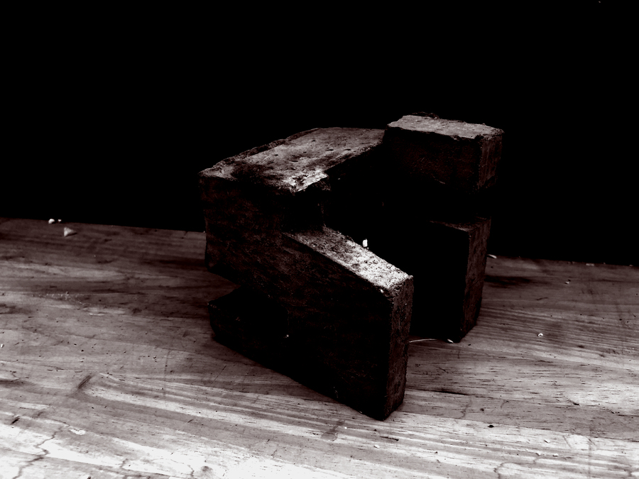

The methodologies introduced will emphasize design as an iterative process, rooted in thinking through the act of making.
Summer Design Institute — Syllabus
An immersive introduction to design
The Summer Design Institute introduces a range of tools, skills and concepts rooted in architecture and landscape architecture to equip you with a foundation for further design work. These include spatial and material exploration, systems thinking, and site readings and response. Through this brief immersion in studio culture and practice, the intent is to gain a facility for seeing, thinking, and making critically. Essential to every aspect of this practice is drawing spatially in two and three dimensions. The projects vacillate between longer explorations and quick studies — using careful, measured drawings in relation to the quick generation of alternatives. Each week's exercise builds upon the next, supported by a series of topical lectures, tutorials, and workshops.“Over the course of the month, you will be asked to extract, distill, translate, and situate as a way to understand key design principles and reconfigure spatial and material languages for different contexts.”

About the institute
The Summer Design Institute is an intensive four-week summer program at the University of Virginia School of Architecture. It introduces incoming students to the methods, theories, and techniques of the design studio — for landscape architects, architects, and urban planners — and runs 9:00–18:00 each day through the month of July and into August.
Director: Bradley Cantrell (Chair and Professor of Landscape Architecture). The 2019 teaching team was composed of Anthony Averbeck (Lecturer in Architecture), Emma Mendel (Lecturer in Landscape Architecture), and Katie Stranix (Assistant Professor in Architecture), supported by a group of graduate instructors. Guest lecturers and critics joined throughout the summer.
The institute has run each summer since 2018. This page documents the 2019 iteration — the most complete archive of the program — whose four-week arc (extract, distill, translate, situate) remains the template for the institute.